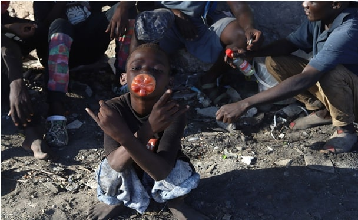
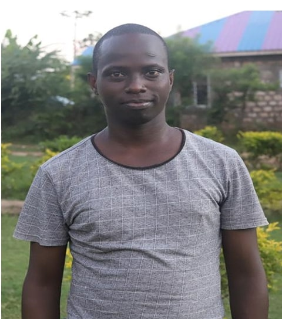
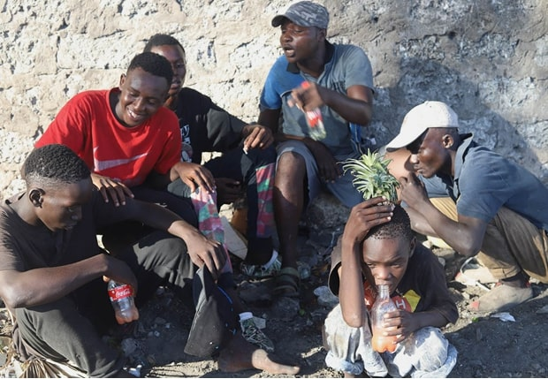
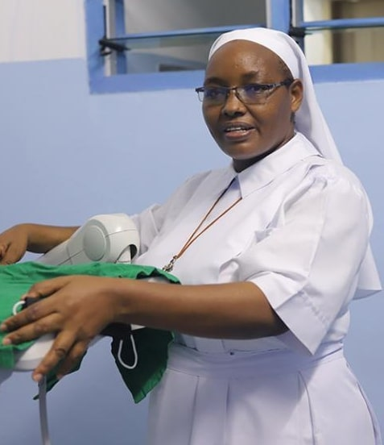
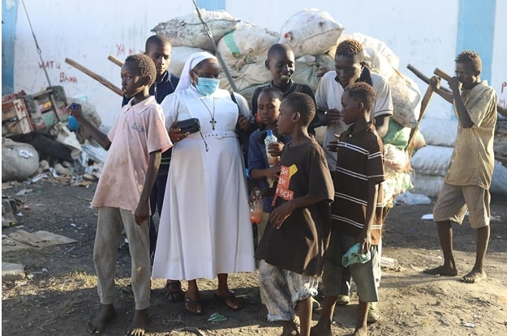
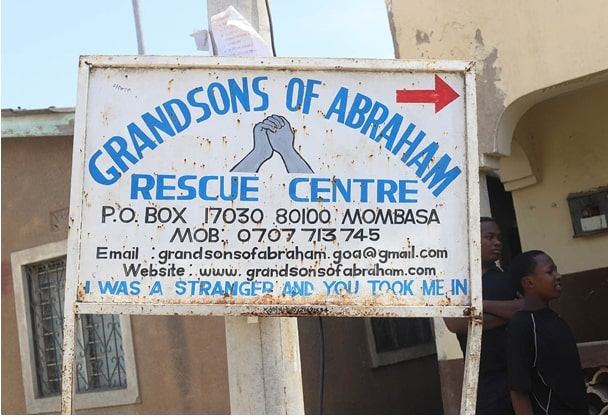

Rescuing Youths from Drug Use on Kenya's Indian Ocean Coast
By : Phanuel Iyaya Makhakha
A Heartbreaking Reality

A Beacon of Hope: Caleb Kanja

Daily Struggles and a Lifeline

Compassionate Care: Sr. Veronica Wanjiru

Reaching Out Through Music

The Grandsons of Abraham Rescue Centre
